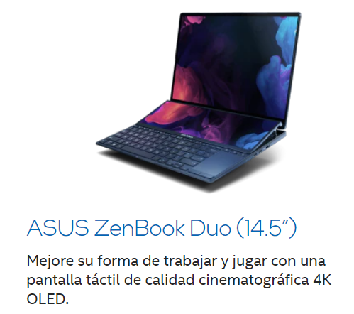
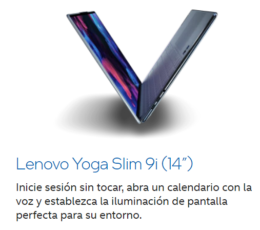

¿Que es Intel EVO?
Intel EVO es una certificación para portátiles con procesadores Intel que indica calidad, rapidez, movilidad y potencia. Los portátiles certificados con Intel EVO podrán presumir de unas características propias de un equipo de alto rendimiento, pero estando siempre contenidos entre las 12 y las 15.6 pulgadas. Esta es una certificación válida solo para portátiles que integren procesadores Intel, ya que la empresa se ha encargado de diseñar unos estándares que deben pasar los equipos que opten a certificarse con Intel EVO.
Equipos con certificacion Intel EVO


Video Informativo
Musica para el ambiente
Datos Personales
Deras Cerros, David Alejandro
DC19019
Grupo #1